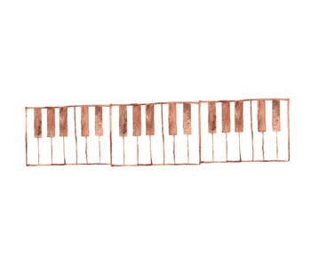
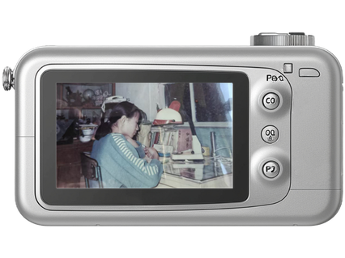

THE HANDWRITTEN SONGBOOK
A Family Recording Team
My mother had a small notebook when she was in middle school.
It was her songbook,
filled with handwritten lyrics of the Chinese pop songs she loved.
She did not have much pocket money,
so she could not buy many cassette tapes.
Instead, whenever she heard a song she liked,
she tried to write it down.
Every evening at 6:30,
a television program called “Daily Song” played one popular song.
The song was played only once.
There was no pause button, no replay,
and certainly no internet where she could search for the lyrics afterward.
So my mother turned the whole family into her “recording team.”
One person would write down one line,
another person would catch the next line,
and they would take turns
trying to capture the lyrics before the song disappeared.
Sometimes, it took them almost a week to piece together one complete song.
One of the songs she copied into her notebook was Nengjing Yi's
“The Last Day of Nineteen (十九岁的最后一天).”
I especially like these lines:
十九岁的年龄 本来就该挥霍
At nineteen, you are supposed to spend your youth freely.忽然之间就走过
And suddenly, those years have passed.十字头的年龄没留下什么
The years of being a teenager left almost nothing behind.二字头的开始
Now begins the age of twenty.我好想说如果一切可以从头来过
I wish I could say, if everything could start over,是否可以选择一次
无悔的梦
Would I choose a dream without regrets?
THE TABLETOP PIANO
Learning Melodies By Ear
My mother also had a small tabletop piano.
She could not read music,
but she taught herself songs by pressing one key at a time and listening carefully.
When the television series Huo Yuanjia (霍元甲) became popular,
she tried to figure out its famous theme song,
“The Great Wall Will Never Fall (万里长城永不倒),” on the piano entirely by ear.
She would play a note, listen, decide whether it sounded right,
and try again.
Even television was shared at that time.
Friends who did not have a TV would come to her house
and sit together around their small screen to watch Huo Yuanjia.

♫ ♪ ♩ ♩
♪ ♩ ♪ ♫ ♫ ♪ ♫ ♫
♫ ♪ ♩ ♪ ♪
♩ ♫ ♪ ♫ ♫ ♪ ♩
COLLECTIVE MEMORIES
Owning A Song Before The Internet
When I imagine her childhood,
I realize how different music was before the internet.
For me,
music is something I can find instantly and listen to alone,
making it a private experience.
For my mother,
music required waiting, attention, memory,
and sometimes the help of an entire family,
making it a collective experience instead.
Maybe the internet did not simply make music easier to access,
it changed what it meant to actually own a song.
